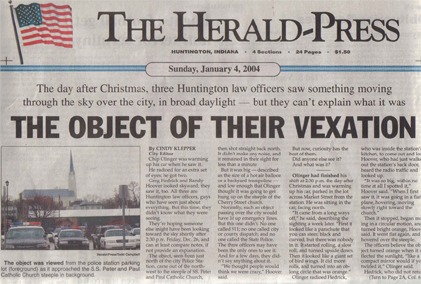

The Herald Press
Huntington, Indiana
Sunday, January 4, 2004
The day after Christmas, three Huntington law officers saw something moving through the sky over the city, in broaddaylight - but they can't explain what it was
Articlecourtesy of BOB BARNES, Huntington, IN
THE OBJECT OF THEIR VEXATION
By Cindy Klepper
City Editor
[Insert: The object was viewed fromthe police station parking lot (foreground) as it approached the S.S. Peterand Paul Catholic Church steeple in background]
Chip Olinger was warming up his carwhen he saw it.
He radioed for an extra set of eyes;he got two.
Greg Hedrick and Randy Hoover lookedskyward; the saw it, too. All three are Huntington law officers, guys whohave seen just about everything. But this time, they didn't know what theywere seeing.
They're hoping someone else might havebeen looking toward the sky shortly after 2:30 p.m. Friday, Dec. 26, andcan at least compare notes, if not provide an
explanation.
The object, seen from just north ofthe city Police Station, came out of the northwest to the steeple of theSS. Peter and Paul Catholic Church, then shot straight back north. It didn'tmake any noise, and it remained in their sight for less than a minute.
But it was big - described as the sizeof a hot air balloon or a backyard trampoline - and low enough that Olingerthought it was going to get hung up on the steeple of the Cherry Streetchurch.
Normally, such an object passing overthe city would have lit up emergency lines. But this one didn't. No onecalled 911; no one called city or county dispatch; and no one called theState Police.
The three officers may have been theonly ones to see it. And for a few days, they didn't say anything aboutit.
"We thought people would think we'recrazy," Hoover said.
But now, curiosity has the best of them.
Did anyone else see it?
And what was it?
OLINGER HAD FINISHED his shift at 2:30p.m. on the day after Christmas and was warming up his car, parked in thelot across Market Street from the station. He was sitting in the car, facingnorth.
"It came from a long ways off," he said,describing the sighting a week later. "First it looked like a parachutethat you can steer, black and curved, but there was nobody in it. It startedrolling, a slow roll, and turned upside down. Then it looked like a giantset of bird wings. It did more rolls, and turned into an oblong circlethat was orange."
Olinger radioed Hedrick, who was insidethe station's kitchen, to come out and look. Hoover, who had just walkedout the station's back door, heard the radio traffic and looked up.
"It was so big, within no time at allI spotted it," Hoover said. "When I first saw it, it was going in a flatplane, hovering, moving slowly right toward the church."
Then it stopped, began moving in a circularmotion, and turned bright orange, Hoover said. It went flat again, andhovered over the steeple.
The officers believe the object turnedorange when it reflected the sunlight, "like a compact mirror would ifyou twirled it," Olinger said.
Hedrick, who did not return phone calls,told the other two that his first impression was that it was "a tire" inthe sky, but that made no sense.
Olinger said the object changed shapethree or four times. It moved in a straight line, tumbling as it moved,and made no noise.
"It would glide, rotate the wide wayaround, and stay at one level," Hoover said.
It appeared to be moving along at treetoplevel, no higher than the roof of the church. It disappeared from Olinger'sview after it went behind the church steeple and moved directly north.
Olinger was in the parking lot at Marketand Cherry; Hoover was walking from the back door of the station to hiscar parked at Cherry and Market; and Hedrick was 30 to 35 feet to Hoover'sleft.
Olinger said the sighting lasted 30-45seconds; Hoover agreed it was less than a minute.
"It wasn't any kind of flying machinethat I can think of," Olinger said. "And it's not like a '50s flying saucer.It was that big, but it didn't have a hump in
the middle."
"It was completely circular, dome shaped,"Hoover said. "I can't imagine how it could possibly be anything I couldrelate to." The object would stop and then spin slowly, he said, a maneuverno known aircraft can accomplish.
"I was never really afraid," Hooversaid. "I was just in total amazement."
FATHER RON RIDER, pastor of the SS.Peter and Paul Catholic Church, said he didn't see anything unusual thatafternoon, and hasn't received any phone calls from anyone who did.
"That's the first I've heard of it,"he said Friday.
Diane Redlich, one of the managers atthe Huntington Municipal Airport, was in the air that afternoon, but washeaded to Cincinnati and didn't fly over Huntington. Several other planestook off from the local airport that afternoon as well, she said, but there'sno record of any out-of-the-ordinary craft making either a takeoff or landingat Huntington.
Bob Scott at Fort Wayne's Smith Fielddoesn't have any clues either.
"I worked that afternoon and I don'trecall anything unusual," he said, "Other than Santa Claus heading home,I don't know what it could have been."
Sandra Lux, public relations managerat Fort Wayne International Airport, did not return a phone call.
End of article